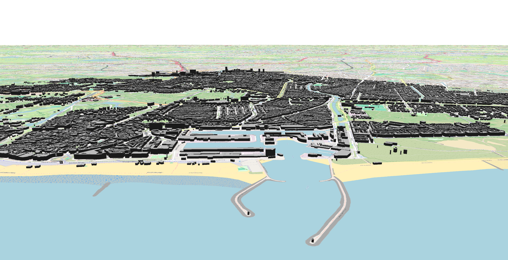

Map Portfolio
Interact with the web-deployed layers directly below.

View More
Click here to read more about vegetation in Beirut.
Goal 3: Under-Five Mortality Rate (U5MR) Choropleth Map
An interactive data map mapping global under-five mortality trends using Leaflet.js and data streams sourced directly from the UN SDG DataHub. Hover over specific elements to view localized details.

View More
Click here to read more about on-foot accessibility to kindergartens in Prague.

View More
Click here to read more about 3d DEM Flood modelling.

View More
Click here to read more about .

View More
Click here to read more about Multicriteria Analysis.
Technical Skills
Leaflet.js
JavaScript
HTML5 / CSS3
Spatial Analysis
GeoJSON Data Mapping
Contact
GitHub Profile: github.com/alice772
×